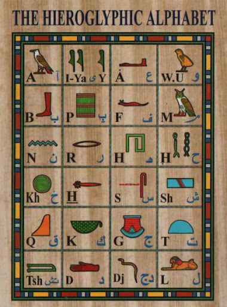
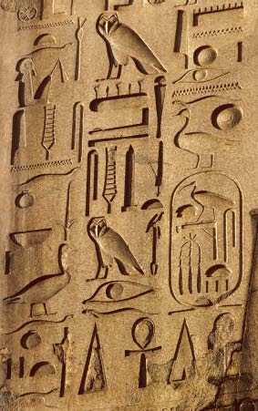
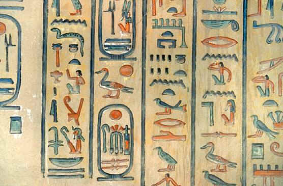

"It is a complex system, writing figurative, symbolic, and phonetic all at once, in the same text, the same phrase, I would almost say in the same word."
Jean-Francois Champollion

The shapes of the hieroglyphs are taken from real (or imaginary) objects, but most are used phonetically. E.g. the hieroglyph for house can be used to write the word pr (vowels indeterminate) which means 'house.'

Tomb of Queen Amonherkhepsef
